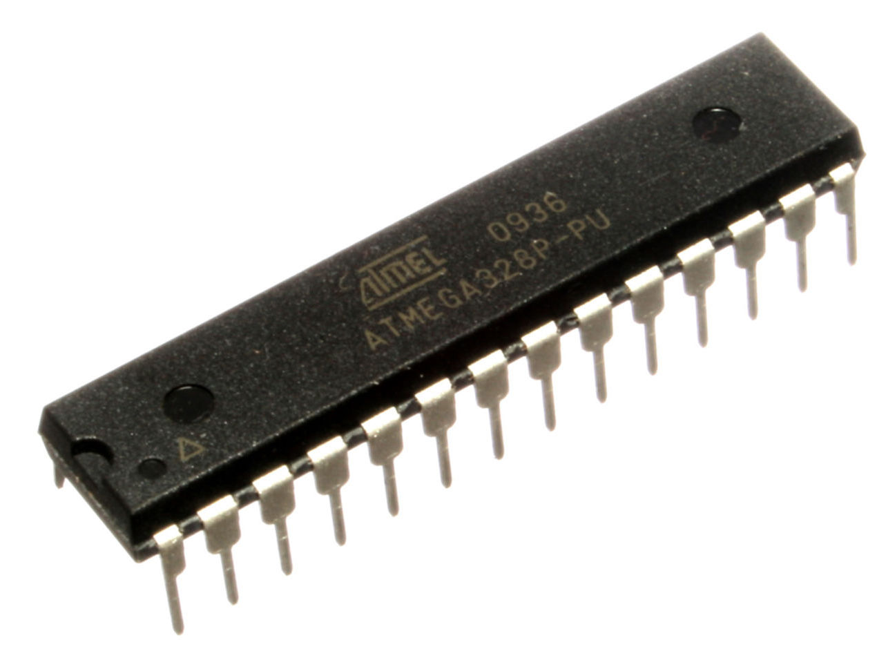
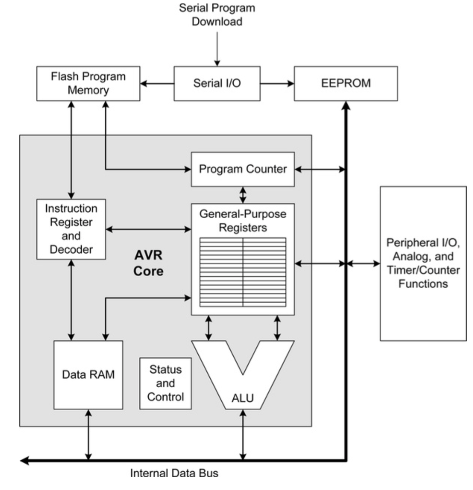

Atmel offers a wide variety of AVR MCU available in different series or families. MCU from these families differ in capabilities and funcionalities and sometimes in instructions available and architecture. However, the design of AVR itself followes some common philosophy that could help us understand the internal architecture of such an MCU. In this post we talk about Atmel ATmega MCU which are available in different parts numbers, and with differnt amount of program memory.
Internal Architecture of ATmega family
Looking at the block diagram of internal architecture of ATmega family one would notice that the MPU has:
- Serial I/O communication for dowanloading of program
- Flash memory for storing program to be executed
- EEPROM (for storing CPU configuration bits)
- Peripheral I/O
- Analog/Digital converter
- Timers/counters
- Data memory
- CPU core (ALU, Program counter, general purpose registers etc)

AVR is based on modidfied Harvard architecture, so it is expected the program and data memory space tos be seperate. In addition to that, AVR allows readonly access to any data residing in the program memory, but no writes are allowed by the program itself. In addition to the memories for data and programs, AVR also has few bits of EEPROM for storing CPU configuration parameters (we’ll see later). When compared to a CPU like Intel 8080 or Zilog Z80, the ATmega has lots of other functionalities buil-it, to be justly called a microcontroller. Lets talk them in detail:
Serial I/O
While Intel 8080 or Zilog Z80 needs a UART chip to communicate with the outside world via serial connection, ATmega has this functionality built right into the chip making serial communication trivial. Some chips offer USB commucations too.
Memories
ATmega has flash memory for storing programs, and EEPROM for storing configuration parameters. Contents of both these memories are preserved when the power is off. Both these can be written from outside with appropriate tool. For storing temporary data there is data memory, which is in fact static RAM. The exact amount of thse memories vary depending on the model number.
CPU
The CPU core in AVR like most other CPU has ALU, Program Counter, and a host of general purspose registers. ATmega has 32 general purpose registers, each being 8-bit wide. The number and usage can slightly vary depending on the model. Surprisingly enough, these registers are mapped to first 32 bytes of the data memory. This meeans a program whishing to access the registers can simply read/wirte data to the specific memory locations. Last six of the 32 regisers are used as index registers, each in a 16-bit wide fashion. PC (program counter), a 14-bit special purpose register, points to the next executable instruction in program memory. When the MCU is first powered up, or reset, the PC is loaded to with value 0x0000 (this could be changed though). The SP (stack pointer) consists of two registers (taken from the total 32) and points to a memory location in data memory. In addition, AVR has few status regisers to reflect various operational status.
Peripheral I/O
ATmega supports digital input/output of data with outside world, most likely from the same board. Some of these I/O can be analog, PWM (pulse width modulated) signals, others could be simple TTL (transistor transisto logic). Specilized communicatoin such as I2C, SPI, CAN bus can also be supported with proper support circuit and programs. Often there is an analog comparator that could be used for comparing analog signals. Digital data from/to outside world are stored in memory locations starting right after the 32 registers map. Though these locations are called I/O registers, they are not CPU registers, just ordinary memory locations mapped as an I/O port. Depending on model there could be 64 or more I/O registers.
Analog/Digital Converter
ATmega has in-built A/D (Analog to Digital) converter. Some models have D/A (Digital to Analof) converter too. This allows interfacing with analog world without needing extranal A/D chips.
Timers/Counters
ATmega has on chip timers/counters, and thre are two kinds. The first kind is a 8-bit synchronous where the clock signal is derived from the CPU clock. The second kinds allows connecting an external clock circtuit to trigger the timer/counter and works independent of the CPU clock. Each of the timer/counter available can operate in a multiple of modes depending on application needs.

Other Features
Depending on the model, certain models can have special sensors built-in, can have an LCD driver, LIN bus support etc.
Pin configurations
An ATmega chip has many more functions than it has physical pins to support them for. To determine which functionalities are avalilable at which pins, ATmega has something called control register. Changing a suitable bit in the register can make a pin digital or analog, input or output, attach an intenal pull-up resistance etc. The timers/counters, communication interface, A/D etc can be configured by adjusting bits in the configuration control registers. The expectation with such design is that the user would configure the chip for his application need and the chip would just operate the way it is configured.
Watchdog timer
Though not shown in the picture, ATmega chips have a special timer, still programmable, called watchdog timer. This allows user programs or say an operating system to watch the MCU if it is stuck in a program execution. If that happens, a separate circuit can reset the MCU witout human intervention.
Credits
- The pictures in this article are courtesy of Arduino- A technical reference